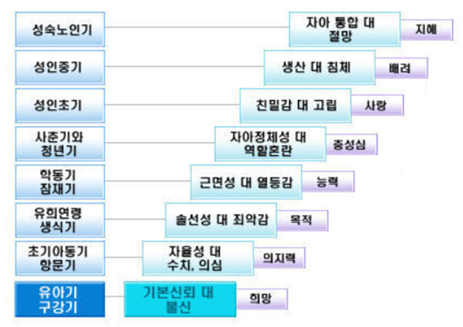

프로이드(Freud)의 영향을 받은 에릭슨(Erikson)은 심리사회적 이론(psychosocial theory)으로 확대시켜 인간의 의식적 자아와 성장에 접근을 시도하였다. 인간을 창의적이며 합리적 존재로 보았다. 더불어 인간행동이 의식 수준에서 통제가 가능한 자아에 의해 동기화 된다고 보았다. 인간은 요람에서 무덤까지 각 발달단계마다 초래하는 두 개념 중 긍정적인 쪽이 더 발달해야 다음 단계의 과제를 원만하게 진행될 것이라고 주장했다. 다시 말해 에릭슨이 제시한 심리사회적 발달의 8단계는 유전된 성격의 기본 도안(ground plan)이 점차적으로 전개되어 나타난 결과라고 볼 수 있는 것이다.

1단계. 신뢰감 대 불신감
신뢰감대 불심감 단계(trust vs. mistrust, 0~만 1세)는 영아기(infancy)로 프로이드의 구강기에 해단된다. 입으로 빠는 활동을 통하여 삶을 시작하고 세계를 탐색하지 시작한다. 신뢰는 자신을 돌봐 주는 사람이 배고프거나 덥고 추울 때를 비롯해 기다리면 해결되고 충족시켜 줄 것이라고 믿게 된다. 양육자와 영아 관계의 신체적․심리적 욕구가 애정적으로 잘 충족시켜 주면 영아는 기본적인 신뢰감(basic trust)이 형성하게 되고, 충족되지 않으면 불신감(basic mistrust)을 갖는다. 어머니와 떨어져 있어도 불안이나 분노를 표현하지 않고 자신의 욕구가 즉시 만족되지 않아도 보채지 않게 된다. 양육자에게 모든 기본적인 경험을 하기 때문에 성격발달에 직접적인 영향을 미친다.
2단계. 자율감 대 수치심
자율감대 수치심단계(autonomy vs. shame, 만 1세~ 3세경)단계는 영유아기(early childhood)로 프로이드의 항문기에 해당된다. 신체 및 인지적 발달이 빠르게 나타난다. 신경근육과 언어발달 등 움직임이 자유로워지면서 모든 것을 스스로 하겠다고 한다. 독립적으로 주변 환경과 상호작용하면서 의존했던 양육자에게 벗어나 무엇이든 도전하며, 자신의 행동을 자랑스럽게 여긴다. 이때 자율성이 잘 자라지만 과잉통제를 하면 수치심과 의혹이 생긴다.
3단계. 주도성 대 죄의식
주도성 대 죄의식단계(initiative vs. guilt, 만 3세~6세경)는 프로이드의 남근기에 해당된다. 에릭슨 역시 오이디푸스 콤플렉스와 같은 전통적 정신분석이론을 따르며 사회의 내적 작용에 있다고 보았다. 이 시기는 언어와 근육의 발달은 적극적으로 주위세계에 도전하고 새로운 활동을 시도하고 실패를 스스로 처리할 수 있는 주도성을 발달시켜간다. 이때 유아는 성적 관심보다는 놀이와 자신이 선택한 활동에 더 많은 관심을 가지고 있다고 주장함으로써 전통적인 정신분석적 사고에 이의를 제기했다. 이 단계를 성공적으로 극복하게 되면, 유아는 목적의식을 갖게 되며, 스스로 자기통제를 하는 주도성이 발전한다. 그렇지 않으면 목표달성에 대한 의지와 용기가 부족하고, 두려움 또는 죄의식과 표현의 자유를 방해하는 억제가 강하게 나타난다.
4단계. 근면성 대 열등감
근면성 대 열등감단계(industry vs. inferiority, 6세~12세경)는 학령기(school age)로 프로이드의 잠복기에 해당된다. 이 시기는 초등학교에서 공식적 교육을 통해 문화에 대한 기초기능은 배우게 된다. 주요 과업으로는 인지적 호기심과 사회적 기술을 습득하려는 근면성과 성취감을 숙달하는 것이다. 아동은 정해진 놀이 규칙에 따라 또래 아이들과 협동하고 어울릴 수 있는 능력뿐만 아니라 연역적 추리, 자기통제 능력을 발전시켜야 한다. 아동이 어떤 과업을 완수하게 될 경우, 주변 사람들의 강화가 뒤따르기 마련이며, 이는 근면성의 발달로 이어진다. 또래에 비하여 열등하다고 느끼게 되면 학습추구에 대한 용기를 잃고, 부모나 교사가 요구한 과업을 성취할 수 있는 무능력이나 자신이 중요하지 않음을 지각하면서 열등감을 형성하게 된다.
5단계. 정체감 대 역할 혼미
정체감 대 역할 혼미단계(identity vs. role confusion, 12세~20세경)는 청소년기로 자신의 능력에 대한 자신과 타인의 평가에 의한 믿음이다. 이 단계는 신체의 급격한 변화와 성적 성숙이 이루어지고, 진학문제, 이성문제 등 사회적 역할의 선택과 결정하는 해야 하는 자아정체성이 발달한다. 자신이 어떠한 사람인가에 대해 끊임없는 자기 질문을 통해 자신에 대한 통찰과 자아상을 찾기 위한 노력을 하게 된다. 남의 눈에 어떻게 보이는지에 대해 동일한 사람으로 지각될 경우 자아정체성이 형성되지만 그렇지 않으면, 자신의 무가치감에 의한 성 역할에 혼란을 가져오고 인생관과 가치관의 확립에 심한 갈등을 일으킨다.
6단계. 친밀감 대 고립감
친밀감 대 고립감단계(intimacy vs. isolation, 20세~25세경)는 성인기가 시작되는 청년기(young adulthood)로 가정, 성, 사회적 관계를 통하여 친밀감이 형성되는 시기이다. 사회적으로나 성적으로 다른 사람과 융합시킬 수 있는 희생과 타협 능력은 상호의존성을 발달한다. 친밀감은 타인과의 이해와 공감을 나누는 수용에서 발달한다. 그러나 친밀감 형성이 미숙하면, 대인관계에서 위축되고 형식적이면서 자기 자신에게만 몰두하고 고립감을 낳는다.
7단계. 생산성 대 침체성
생산성 대 침체성단계(generativity vs. stagnation, 25세~65세경)는 자녀를 낳고 기르고 결혼을 시키는 시기이다. 생산성에는 자녀를 출산하고 양육하는 것 이외에 학생, 동료 또는 친구를 보호하고 직업이나 여가활동에 참여함으로써 얻게 되는 창조성(creativity)이 포함된다. 생산성을 통해 후세대를 양육하고 가르치며, 지도 · 감독하는 활동을 통하여 문화와 의식이 후세대로 연결시키는 원동력을 형성한다. 이 시기에 부모로서뿐만 아니라 다음 세대와의 연결은 사회의 존속과 유지를 위한 생산성이다. 반대로 생산성을 획득하지 못하면 성격이 침체(stagnation)되어 자신의 에너지와 기술이 자기만족을 위해 사용하게 된다. 이렇게 되면 목표를 달성하지 못했다는 무능력감과 사회에 의미있는 기여를 못했다는 회의로 인해 침체를 느끼게 되고, 자신의 삶이 잘못된 것이라는 위기의식을 겪게 된다.
8단계. 자아통합감 대 절망감
자아통합감 대 절망감단계(ego integrity vs. despair, 65세 이후)는 성숙기, 노년기(maturity)로서 신체적 쇠약, 배우자와 가까운 사람들의 죽음으로 자아통합감과 절망감을 갖게 된다. 자신의 과거를 돌아보며 자신이 지금까지 살아온 인생을 별다른 후회 없이 그대로 받아들이게 되면 자아통합감을 느낀다. 자신의 과거를 돌아보며 자신이 한 모든 것에 대해, 훌륭한 과업에서부터 수치스러울 정도의 큰 실수까지 자기 자신을 인정하고 수용 할 줄 알지만 반면 자아통합감이 결손되어 절망감에 빠지게 된다. 이렇게 수용을 하게 되면 인간은 성숙해지고 자아가 발달하게 되는 기쁨을 느낄 수 있다.
이와 같이 에릭슨은 인간이 올바를 판단력과 함께 내적 통합성, 그리고 성취할 수 있는 능력을 보유하고 있는 이성적이고 합리적인 존재로 규정하고 환경 속에서 존재 가치를 찾으려 했다. 에릭슨의 심리사회적 발달단계마다 각 개인은 위기상황에 직면하게 되며, 이러한 심리사회적 위기는 하나의 전환점으로서 개인 내부의 변화와 개인과 환경과의 상호연관성 변화를 추구하였다.
참고문헌
김경회, 문혁준, 김선영, 김신영, 김지은, 김혜금, 서소정, 안선희, 안효진, 이희경, 정선아, 황혜원(2013). 보육학개론. 서울: 창지사.
김상림, 한준아, 권연희(2013). 보육과정. 경기: 양서원.
김연진, 이상희, 고영자(2015). 영유아 보육과정. 서울: 태영출판사.
김영희, 유경애, 이옥섭(2002). 유아교육과정. 서울: 동문사.
오연주, 이지영, 이정수, 민광미, 류진순(2016). 보육과정. 서울: 창지사.
유구종, 조희정(2012). 최신 영유아 보육학개론. 경기: 공동체.
2021.11.28 - [분류 전체보기] - 프로이드의 발달 이론- 심리성적 발달 5단계
프로이드의 발달 이론- 심리성적 발달 5단계
심리성적 발달 5단계 프로이드(Sigmund Freud)는 성격발달 과정에서 중요한 영향을 미치는 성 에너지인 리비도의 과잉 및 충족 또는 좌절 및 고착에 따라 성격발달에 중요한 영향을 미친다고 주장
think-sis.tistory.com